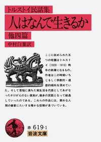

海外文学

人はなんで生きるか
作: トルストイ / 訳: 中村白葉
読み易さ: ⭐⭐⭐⭐⭐
トルストイの宗教観が詰まった、晩年の力作
作者の晩年に書かれた民話であり、非常に宗教色が強い作品である。「人は何によって生きるか」という人間の究極の命題に対するトルストイの解が書かれている。「一部の人だけでなく、万人に理解してほしい」という考えのもと、何度も推敲を重ねて書かれたため、簡易な表現でわかりやすく読みやすい。残念ながら、青空文庫では閲覧できない。
書影: 岩波書店